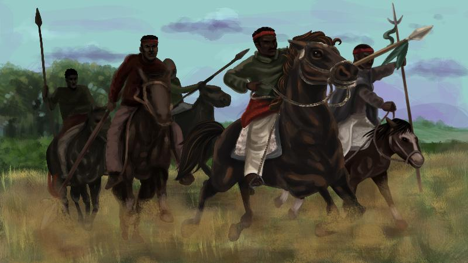
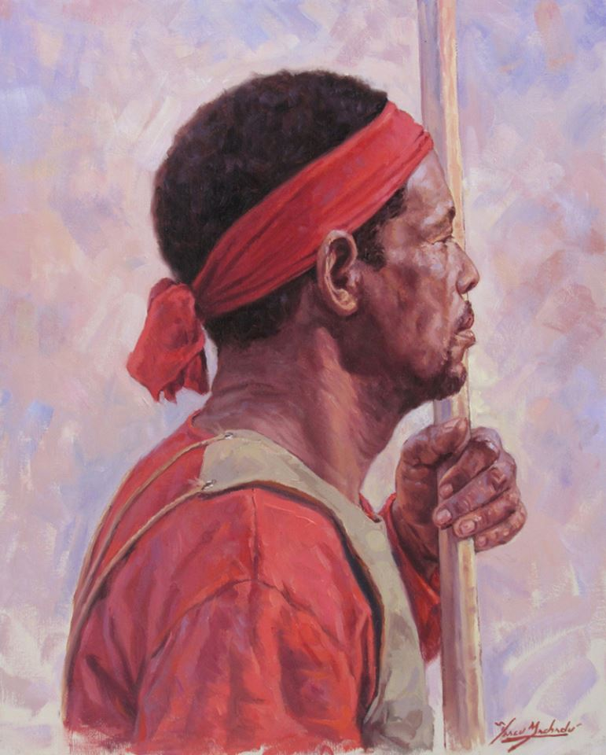
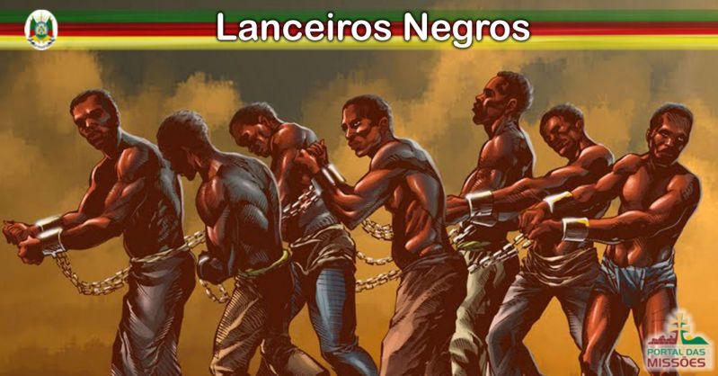

(Rapvl,Bob 2018)
Lanceiros Negros
Sua história e importancia
Segundo Guilherme Justino, em texto para a revista eletrônica da UFRGS, a Revolta Farroupilha foi o mais longo conflito armado que ocorreu no continente americano, durando de 1835 até 1845. A revolta aconteceu porque a população, Insatisfeita com sua influência no governo central e com a concorrência da Argentina na produção de charque, proclamaram independência, enfrentando o exército do governo, então a República Rio-Grandense foi proclamada pelo general Antônio de Sousa Neto.
Esse ato foi uma consequência direta da vitória obtida por forças gaúchas na Batalha do Seival, já que até aquele momento não era consenso a idéia de separatismo. O 1º Corpo de Lanceiros Negros teve atuação importante nesse conflito, quando surgiu em reforço à Brigada Liberal do general Neto. Para Cláudio Moreira Bento, assim fica evidente a grande contribuição do gaúcho negro e mulato para a proclamação da República Rio-Grandense, onde buscam inspiração as mais caras tradições políticas e militares do povo gaúcho.
Os Lanceiros Negros foram organizados como tropa regular a partir da batalha de Pelotas, em abril de 1836, quando os farrapos fizeram centenas de prisioneiros, entre eles muitos negros, que constituíam a maioria da população do município. Eram os escravos que tocavam as charqueadas. Eles também trabalhavam como peões em estâncias e lavouras. Muitos eram domadores de cavalos, ginetes. Com a promessa de liberdade no final da guerra, os lanceiros transformaram-se na vanguarda das tropas farroupilhas. A liberdade era uma promessa sedutora, que fazia os escravos lançarem-se como feras nas batalhas. Eram usados em missões arriscadas, pois tinham grande mobilidade. Lutavam a pé e a cavalo, portando lanças de três metros de comprimento. Quando havia munição, usavam armas de fogo. Atacavam gritando para intimidar o inimigo. Em pouco tempo, os lanceiros passaram a ser temidos pelo inimigo, que evitavam o confronto direto com as tropas de negros.
Os ex-escravizados eram ótimos combatentes montados em cavalos formavam a linha de frente dos conflitos. Os lanceiros negros ficaram conhecidos como os melhores combatentes de cavalaria. Eles não usavam escudos, se protegiam usando Ponchos de lã em seus braços livres, que ao mesmo tempo os serviam como cama, cobertor e agasalho.
(Castelano, Izy. 2017).
Os lanceiros participaram por 10 anos em embates ao lado dos farrapos servindo a vanguarda porém a guerra contra as tropas imperiais se tornava cada vez mais insustentável,”esse foi o contexto que levou à covardia planejada pelo general farroupilha David Canabarro e pelo imperial Barão de Caxias para eliminar o impasse pela raiz,pois a medida que a guerra ia acabando,eles os senhores perceberam que viriam a libertas muitos de seus escravos se a promessa de liberdade fosse cumprida,fazendo com que tomassem medidas injustas e desumanas.Em novembro de 1844, conforme combinado entre os dois líderes militares, Canabarro ordenou à tropa de Lanceiros Negros para que fosse desarmada até o cerro de Porongos e lá montaram acampamento. O Caxias, coube ordenar às tropas imperiais para que também se deslocassem até o local para combater os farroupilhas que lá estivessem.”.
(Ito,Daniel.2016)

(Gomes, Sandro 2016)
O republicano Giuseppe Garibaldi, um dos personagens da Revolta Farroupilha, ressaltou a qualidade dos Lanceiros Negros em combate (segundo biografia escrita por Alexandre Dumas):
“[São] soldados de uma disciplina espartana, que com seus rostos de azeviche e coragem inquebrantável, punham verdadeiro terror ao inimigo. (…) Nunca vi, em nenhuma parte, homens mais valentes, em cujas fileiras aprendi a desprezar o perigo e combater dignamente pela causa sagrada das nações.”
Eles foram atacados desprevenidos e desarmados as 2 da manhã e assim dizimados pelos soldados do império brasileiro,onde morreram de 170 a 800 negros dependendo da versão.E os que sobreviveram voltaram a ser escravos em outros estados como Rio de Janeiro. Este é um trecho da carta enviada do Barão ao coronel que os atacou.
“Poupe o sangue brasileiro o quanto puder, particularmente da gente branca da Província ou dos índios, pois bem se sabe que essa pobre gente ainda pode ser útil no futuro.”
“Com o extermínio da tropa dos Lanceiros Negros, o principal impasse entre os farrapos e os imperiais já não existia mais. A traição de Canabarro e a covardia de Caxias permitiram aos dois lados selar um tratado de paz. O preço do fim da guerra foi o sangue dos bravos guerreiros negros.”
(Ito,Daniel 2016).
Por toda a vida devemos homenagear e lembrar da coragem, da resistência e da força dos lanceiros negros, que estavam na da linha de frente da Guerra dos farrapos, onde foi prometido liberdade em troca de sua luta mas foi uma promessa que não foi cumprida por e a palavra liberdade nunca foi conhecida por esses guerreiros, que foram massacrados durante uma madrugada. Essa atitude só reforça a visão que o império tinha e mostra como a imagem do negro à subjugação e à servidão. Isso reflete na nossa sociedade até hoje, o racismo continua sendo a forma mais expressiva de preconceito no Rio Grande do Sul e no mundo. Por isso temos que ver essa luta deles como uma forma de resistência e não deixar a esperança cair que em algum momento a população negra terá reconhecimento como pessoas como qualquer outra. É por isso que não devemos minimizar o papel do negro na Guerra dos farrapos e muito menos em toda a nossa história. E para todos, os negros fazem parte de nossa história, sendo os mais importantes para todo o Brasil, tratá-los como escória é um desrespeito a seres humanos, á sociedade e á toda uma rica cultura que está sendo excluída por egoístas.

(Portal das missões, 2019)
Bibliografia
JUSTINO, Guilherme, Os Escravos que lutaram em troca de liberdade. Disponível em:
http://www.ufrgs.br/ensinodareportagem/cidades/lanceirosnegros.html. Acesso em 28/08/2020
ITO, Daniel. A Revolução Farroupilha e o massacre dos Lanceiros Negros. Disponível em:
https://medium.com/neworder/a-revolu%C3%A7%C3%A3o-farroupilha-e-o-massacre-dos-lanceiros-negros-daa0a684499c Acesso em: 29/08/2020
CASTELANO, Izy. Lanceiros Negros - A história que não te contaram! Disponível em:
http://www.blackpantherdna.com/2017/09/lanceiros-negros-historia-que-nao-te.html Acesso em: 28/08/2020
Portal das missões, Batalha dos Porongos, Os Lanceiros Negros. Disponível em:
https://www.portaldasmissoes.com.br/municipios/cerro-largo/noticias/view/id/2770/batalha-dos-porongos,-os-lanceiros-negros..html Acessado em: 31/08/2020
Gomes, Sandro, A mística dos Lanceiros Negros. Disponível em:
https://www.appai.org.br/a-mistica-dos-lanceiros-negros/ Acessado em: 31/08/2020
Raplv, Bob, Lanceiros Negros: passado e presente de traição e resistencia; a incessante luta por liberdade. Disponível em:
https://www.bocadaforte.com.br/materias/lanceiros-negros-passado-e-presente-de-traicao-e-resistencia-a-incessante-luta-por-liberdade Acessado em: 31/08/2020
Trabalho escolar executado por: Erika Soares, Giovanni Clock, Lucas Freitas, Nicolas Hibi e Pietra Soares. Professora orientadora: Ana Schantz